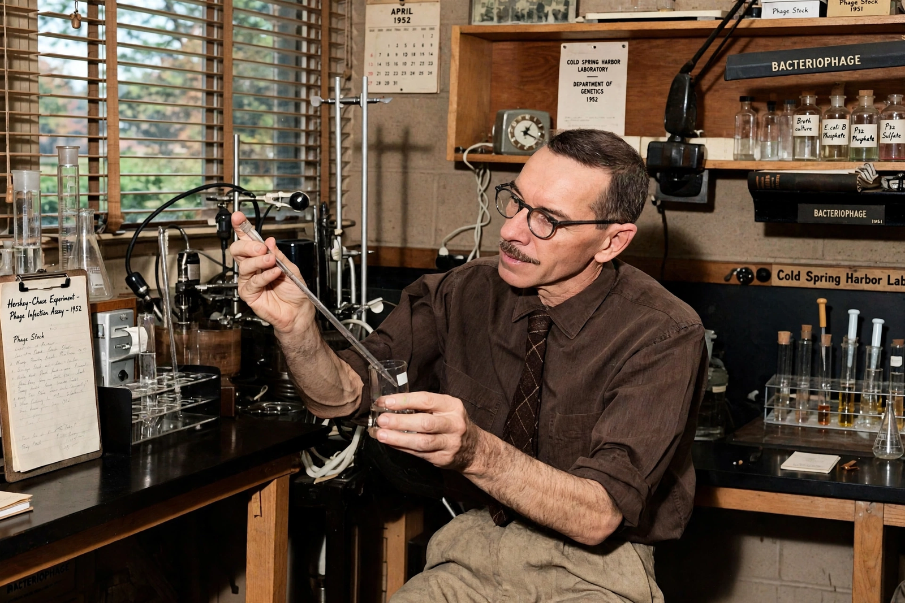

Alfred Hershey
From Wikipedia, the free encyclopedia

Alfred Day Hershey (December 4, 1908 – May 22, 1997) was an American bacteriologist and geneticist who shared the 1969 Nobel Prize in Physiology or Medicine with Max Delbrück and Salvador Luria for discoveries concerning the replication mechanism and genetic structure of viruses. With Martha Chase he performed the 1952 'blender experiment' (Hershey–Chase experiment), which convinced biologists that DNA, not protein, is the genetic material.
The phage group
Hershey joined the informal 'phage group' around Delbrück, studying Bacteriophages — viruses that infect bacteria — as the simplest genetic systems. At Washington University in St. Louis he showed in 1946 that phages could exchange genetic information (independently found by Delbrück), opening phage genetics. From 1950 he worked at the Cold Spring Harbor Laboratory.
The Hershey–Chase experiment
Hershey and Chase labelled T2 phage DNA with radioactive phosphorus-32 and its protein coat with sulfur-35, let the phages infect bacteria, then sheared off the coats in a kitchen blender. The phosphorus — and with it the instructions for making new phages — entered the cells; the protein stayed outside. Published in 1952, the experiment, together with Oswald Avery's 1944 work, settled the identity of the gene as DNA just before James Watson and Francis Crick determined its structure.
Later career
Hershey went on to characterise phage lambda's cohesive DNA ends and directed Cold Spring Harbor's genetics unit. Known for laconic precision — colleagues spoke of 'Hershey heaven', a state of total focus — he retired in 1974 and died in 1997.